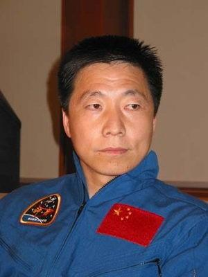

Related pictures
- 


Yang Liwei (June 21, 1965-), a super astronaut, was born in Huludao City, Liaoning Province. He graduated from the Air Force Aviation University of the Chinese People's Liberation Army, was a major general of the Chinese People's Liberation Army, and was the first person in space in China.
he was the first generation of astronauts trained by China and flew safely for 1350 hours in the former air force. At 9: 00 on October 15, 2003, the Shenzhou V spacecraft carried by the Long March 2 F rocket entered space for the first time, symbolizing a big step forward in China's space industry and playing a milestone role. [1] On September 15, 2014, he was awarded the leonov Prize. On October 27, 2017, he was awarded the "Space Science Medal" by UNESCO.
In 1983, Yang Liwei was admitted to the 8th Flight Academy of the Air Force.
graduated from the air force aviation university of the people's liberation army in 1987 with a bachelor's degree. Assigned to the air force fighter aviation unit as pilots. He was awarded the rank of lieutenant in the air force in 1988,
joined the communist party of China in 1988.
in September 1995, the manned space engineering command was approved by the central military Commission to select reserve astronauts from the active pilots of the air force. In mid-April 1997, he achieved excellent results in clinical medicine, aerospace physiological function indexes and psychological quality tests, and became one of them.
in January 1998, he became the first generation of Chinese astronauts together with 13 other excellent pilots in the air force. Since the astronaut brigade was attached to the General Armaments Department, it was changed to the army at that time and the rank of major in the air force was changed to that of major in the army. In 2000, he was promoted to the rank of lieutenant colonel and worked hard and tirelessly.
in July 2003, the astronaut selection and evaluation Committee of manned space engineering assessed that it had the ability to independently carry out space flight and was awarded the qualification of a third-class astronaut. When the rank of lieutenant colonel. At 9: 00 Beijing time on October 15, yang liwei entered space for the first time on the shenzhou v spacecraft carried by the long March 2 f rocket. His pioneering work with technical experts has made China the third country to master manned space technology. On October 15, he was promoted to the rank of colonel. On October 16, Yang Liwei became a national hero in the minds of the people of the whole country.
before and after the spring festival in 2004, he was promoted to the rank of senior colonel. [4] On December 09, Yang Liwei received an honorary doctor of science degree from the Chinese University of Hong Kong.

In 2005, Yang Liwei became deputy director of the Chinese Astronaut Research and Training Center and deputy director of the astronaut system in manned space engineering.
in October 2007, he was elected as an alternate member of the central Committee at the 17th national congress of the communist party of China.
on July 22, 2008, he was promoted to the rank of major general. On November 17, he served as honorary principal of Wenchang Middle School at the centennial celebration of Wenchang Middle School in Hainan Province.
on February 3, 2010, Suzhou college hired him as honorary professor, vice director of China manned space engineering office in March, and on may 15, he was hired by Jilin university as a life coach for college students.
was elected academician of the international academy of astronautics in 2011.
on March 24, 2013, yang liwei received an honorary doctor of science degree from Macao university of science and technology.
from April 2018 to July 2018, he was the director of China manned space engineering office.